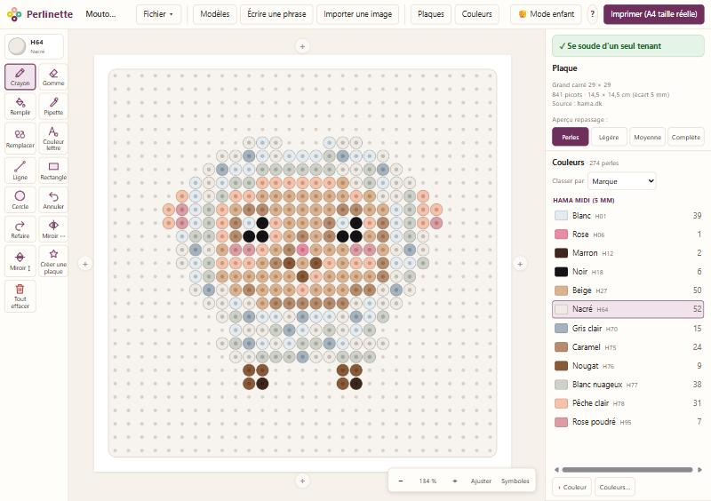
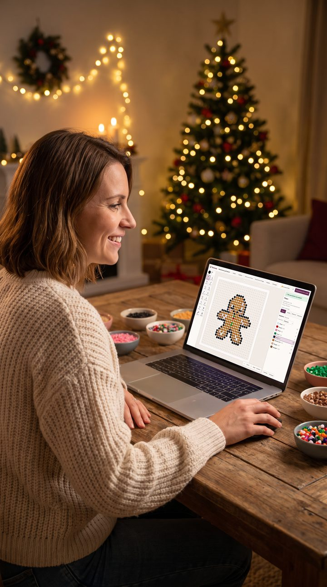
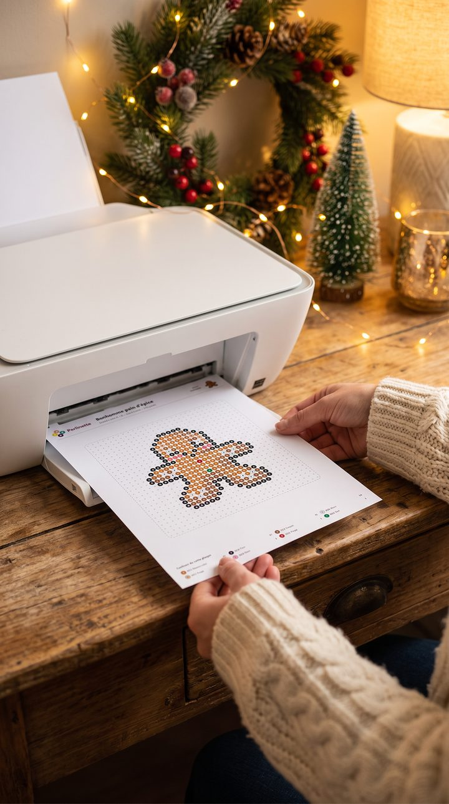
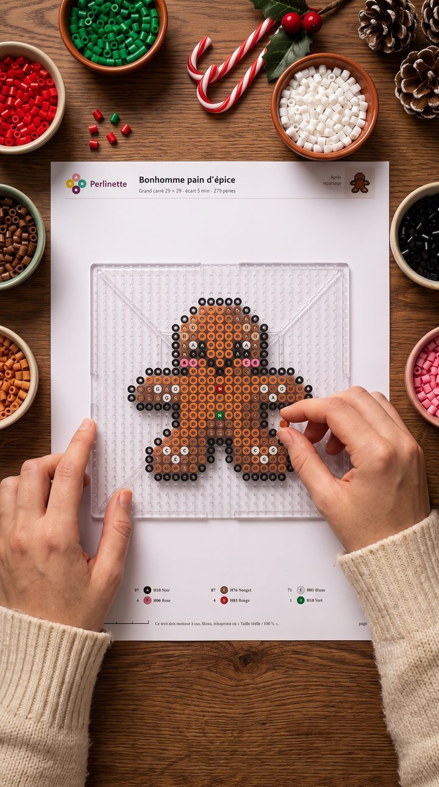
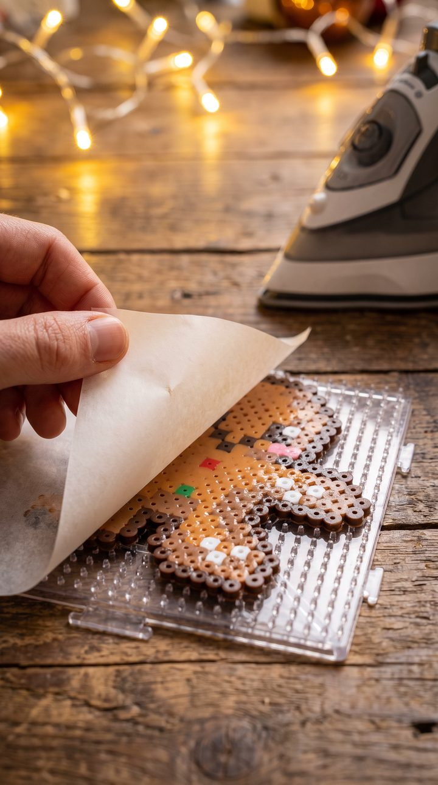
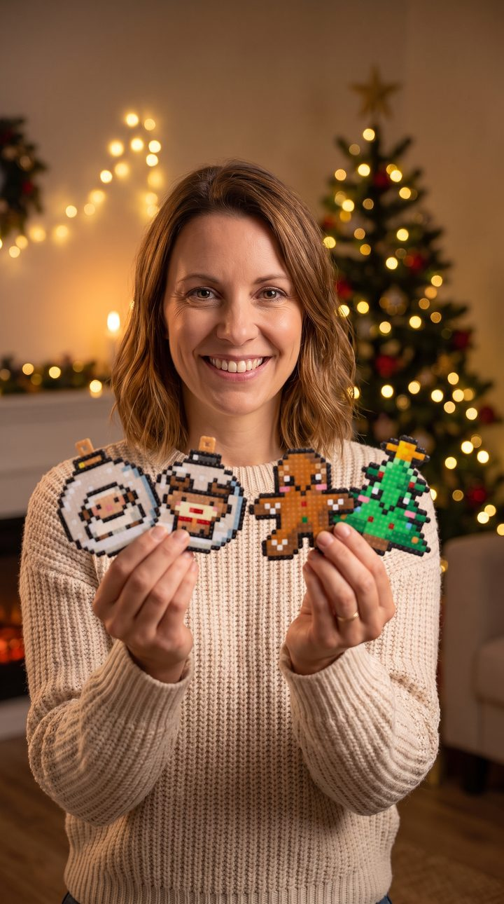
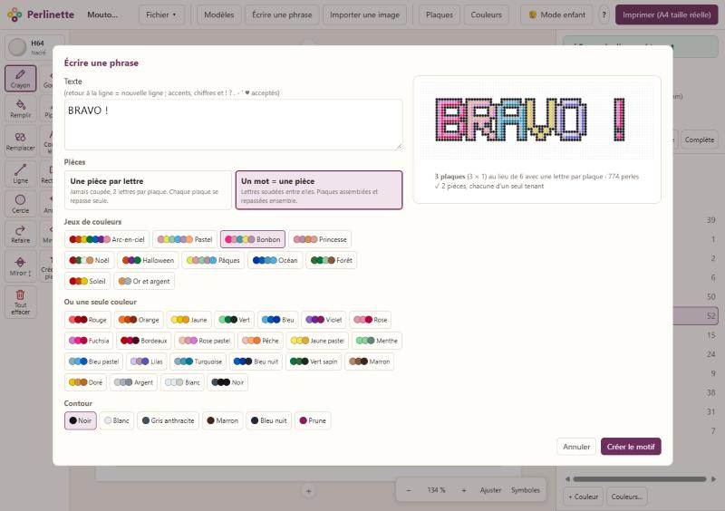
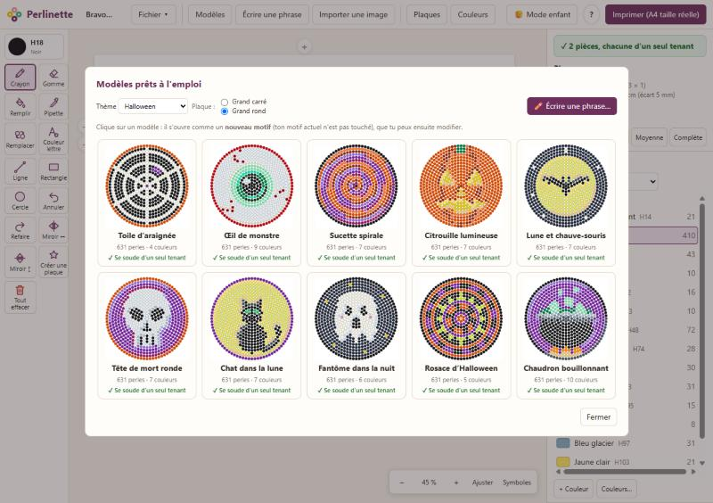
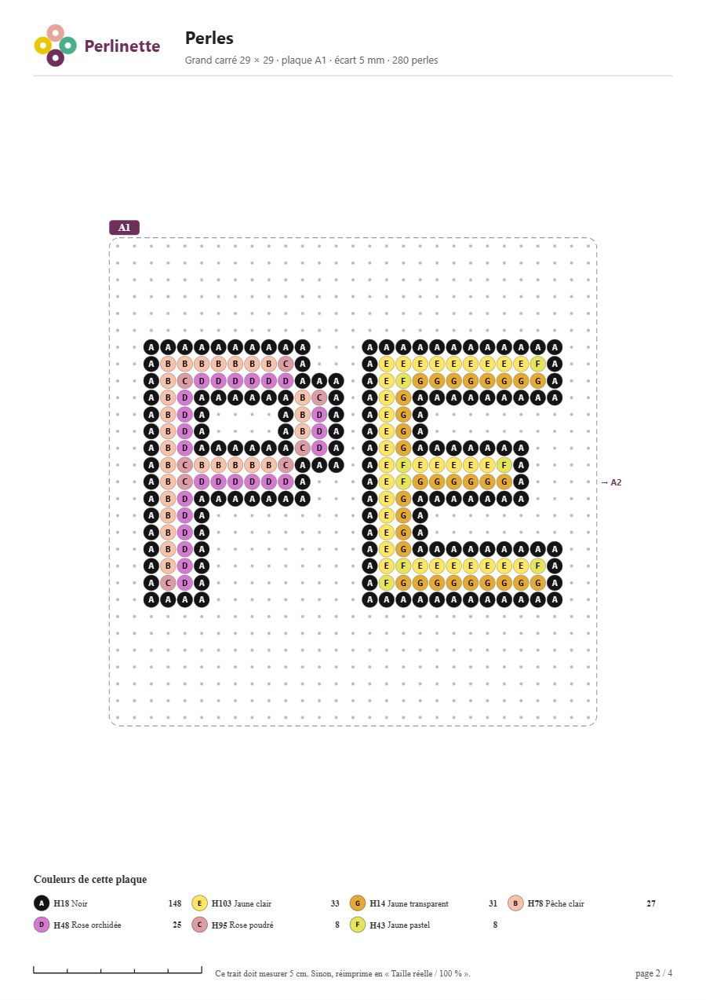

Des motifs de perles à repasser, jolis et qui tiennent.
Dessine, choisis tes vraies couleurs Hama, Perler ou Artkal, vérifie que tout se soudera, puis imprime ta plaque à taille réelle pour poser une plaque transparente dessus.
Gratuit et libre · en français · sans compte · sans installation · fonctionne sans Internet

Tout pour les perles à repasser
Pensé par une créatrice, pour créer seule ou avec des enfants.
Les vraies plaques
Carrés, hexagones, ronds en anneaux, Mini, Midi et Maxi — et tes propres plaques (cœur, étoile…).
Des formes qui suivent les perles
Ligne, rectangle, cercle, pleins ou évidés, posés perle par perle sur les picots.
Ça va tenir ?
Perlinette repère les perles qui ne se souderaient pas : isolées ou tenues seulement par un coin.
Aperçu du repassage
Fusion légère, moyenne ou complète : vois le résultat avant de sortir le fer.
Tes couleurs, en français
Nuanciers complets Hama, Perler, Artkal, et « Mes perles » : seulement ce que tu as chez toi, avec ton stock.
Une image → un motif
Importe un dessin ou une photo : il devient un motif avec tes propres couleurs.
Assembler des plaques
Ajoute une plaque à gauche, à droite, en haut ou en bas : le dessin reste en place.
Mode enfant
Quatre gros outils, de grandes pastilles de couleur, rien qui se dérègle.
Avec mes perles
Un modèle s'adapte aux couleurs que tu as chez toi : tu vois chaque correspondance et tu peux la changer.
Plusieurs motifs à la fois
Chaque motif s'ouvre dans son onglet et s'enregistre tout seul : rien n'est jamais écrasé.
Rendu repassé
La pièce repassée, brillante, sans fond ni plaque : une image PNG prête à partager.
Toujours à jour
Le numéro de version est affiché, et Perlinette te prévient quand une nouvelle version sort.
De l'écran au sapin
Dessine ton patron, imprime-le, pose ta plaque transparente dessus, repasse : c'est prêt.





Images d'illustration créées par intelligence artificielle, à partir des vrais patrons et de la vraie feuille A4 de Perlinette.
Écrire un prénom en un clin d'œil
Tape un mot ou une phrase : Perlinette le compose en lettres épaisses avec du relief, accents compris, et le range sur le moins de plaques possible.
- une pièce par lettre, ou un mot d'une seule pièce ;
- des jeux de couleurs prêts : arc-en-ciel, pastel, bonbon, Noël, océan… ;
- l'aperçu en direct pendant que tu écris.

Des modèles prêts à repasser
Plus de 400 modèles dessinés perle par perle, chacun pensé pour sa plaque : très simples pour la Maxi des petits, travaillés pour le grand carré, détaillés pour la Mini. Animaux, fruits et légumes, gourmandises, mode, plage, camping, monuments, musique, école, sport, fêtes, kawaii, mandalas… Tous vérifiés : ils se soudent d'un seul tenant.

Imprimer à taille réelle
Pose ta plaque transparente directement sur la feuille. L'aperçu montre chaque page avant d'imprimer :
- logo et titre en haut de page (le logo Perlinette ou le tien) ;
- légende des couleurs de chaque feuille ;
- en haut de chaque feuille, une miniature du motif repassé, pour voir le résultat d'un coup d'œil ;
- plusieurs petites plaques sur une même feuille quand elles tiennent ;
- repères A1, A2… et flèches vers les plaques voisines pour assembler.

Plaques prises en charge
Le nombre de picots est vérifié pour chaque plaque.
Midi (5 mm)
Grand carré 29 × 29 (841), petit carré 14 × 14 (196), hexagones de 16, 13 et 8 de côté, ronds de 14, 11 et 7 anneaux.
Mini (2,5 mm)
Grand carré 57 × 57 (3 249 picots).
Maxi (10 mm)
Grand carré 16 × 16 (256 picots).
Et les tiennes
Grilles libres (carrées ou en quinconce) et plaques dessinées à la main.
Commencer en 3 étapes
Aucune installation, aucun compte : Perlinette s'ouvre dans ton navigateur.
- Télécharge Perlinette (fichier .zip) et décompresse le dossier où tu veux.
- Windows : double-clique sur
Perlinette.bat.
Mac / Linux : ouvreindex.htmlavec ton navigateur. - Crée : choisis un modèle, écris un prénom ou dessine perle par perle.